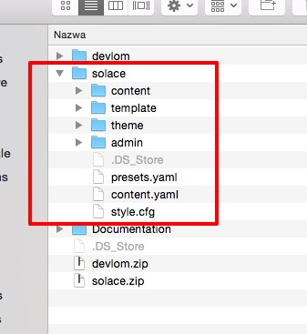
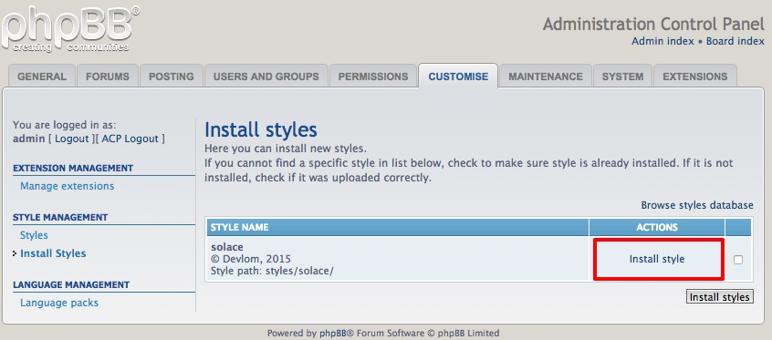

Solace style requires core prosilver style to be installed in your phpBB. It should be there by default so please don't uninstall it.
First, you will need to unpackage Solace on your computer. Solace is zipped into one ThemeForest package which contains following files and directories:
Documentation/
devlom.zip
solace.zipSolace phpBB style is inside solace.zip.
In Windows, to unzip the style, simply double click solace.zip from the Windows Explorer view (for instance, if you downloaded the style to My Documents, you would open My Documents and double click the file). Proceed to click "Extract all files" under the address bar (Windows Vista, 7 and 8) or under the Folder Tasks menu (Windows XP) from within the Explorer window and follow the prompts.
On Mac, zipped files are automatically unzipped upon download by Safari (this setting can be disabled by unticking "Open safe files" in Safari's preferences) and can be accessed through the downloads list.
Make sure that your style includes all the required files as described below:

To upload files, open your favourite FTP client (such as FileZilla, CuteFTP, SmartFTP, etc - even some internet web browsers have this capability) and log in to your hosting account. Generally your publicly accessible files will be in an area named "public_html", "www" or similar.
Upload solace folder to the styles/ directory inside your phpBB 3.1.x root directory. You can check if you have uploaded it correctly by looking at the location of the style.cfg file. It should be located at:
phpBB/styles/solace/style.cfg
Once the style has been uploaded, navigate in the board's Administration Control Panel to Customise -> Install Styles. You should see your recently uploaded styles listed (assuming you uploaded it to the correct location and the style is valid), with an option to "Install style". Simply click it and the installation is complete!

You may need to Deactivate prosilver if you don't see any changes.
Solace can be updated without any prior steps. All you need to do is simply upload the style's files to the same location as the old style, and let the files be overwritten.
Finally, simply navigate to your board's ACP index, and click the button at "Purge the cache".
If you have made changes to the style files you are about to update, you will lose all your changes! So be sure to make a backup of your style's files before updating. After updating your style, you can reapply your changes.